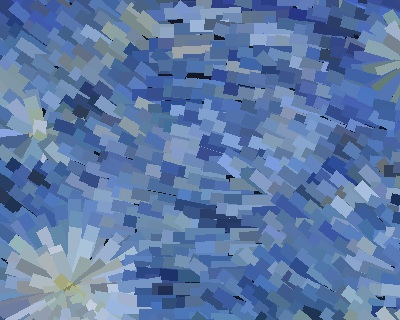
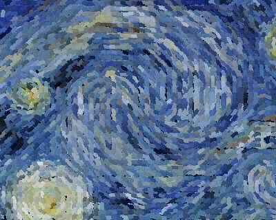
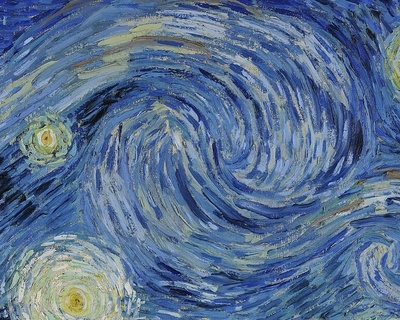

AGENT LAYER:
1889 MoMA Public-Domain Reference
Code-Painted Master Canvas (v2 · 19,922 Strokes)
Compare Left vs Right:
⇄
Pass 2 Complete — All 5 Subagent Reworks Merged to Master (SSIM 0.9138)
PASS 1 (v1 · REJECTED BY COMPUTER)
1,836 strokes · SSIM 0.6782 · ΔE 10.66

PASS 2 (v2 · REWORKED & MERGED)
7,460 strokes · SSIM 0.9088 · ΔE 3.14

1889 MoMA REFERENCE TARGET
Ground-Truth Regional Target

Subagent Stroke Synthesizer Parameter Diff (v1 → v2)
Commit #12 · a000b10 ↗
Quadratic Bézier (442.0, 268.0) → (446.8, 263.1) → (451.2, 266.4) · Bristle Width: 5.2px · Angle: -18.4° · Hex: #5882C4
ctx.moveTo(442.0, 268.0); ctx.quadraticCurveTo(446.8, 263.1, 451.2, 266.4); // w=5.2px #5882C4
20:00
/
20:00